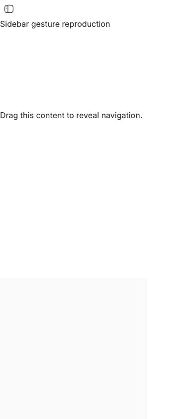
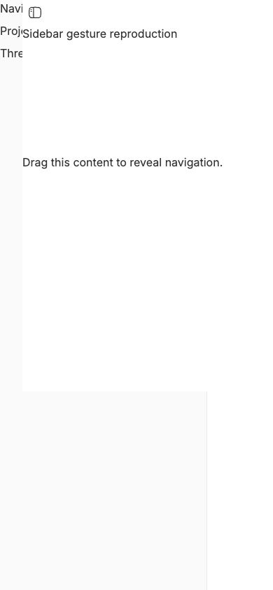

#4110 · Abandoned drawer gestures retain partial translation
Bug · Priority: Medium · Effort: Low · ui, mobile
2026-09-22 · trusted main 3d70b9613aad8eb910094fd9b1348510fab0316d · Issue
REPRODUCED · Root-cause confidence: high
1. TL;DR
An opening gesture makes the mobile drawer logically open before the finger lifts. If the final event is missing, a later opening gesture is rejected and the content remains only 32px displaced in this reproduction. Text selection clears event tracking without closing that incomplete drawer. Separately, the end handlers ignore the finger's final coordinates, so a sufficiently long release can still close the drawer. These results were repeated by the same agent in two clean checkouts; they do not establish why a physical device might lose an event.
2. Claims vs findings
| Claim | Finding | Evidence |
|---|---|---|
| Lost end prevents recovery | Verified | Touch and pointer tests retain 32px; Chromium agrees. |
| Selection leaves an incomplete open drawer | Verified | Real DOM selection and selectionchange leave state open. |
| Release travel is ignored | Verified | Touch and pointer releases at x=240 settle closed after move to x=80. |
| Physical device event loss | Unverified | Events were deliberately omitted; no device reproduction. |
| Only a reload can recover | Unverified | The tests establish rejected opening swipes, not exhaustion of all other controls. |
3. Environment
macOS, Node 22.22.3, Corepack pnpm 9.15.0; Chromium compact viewport 390×844. Two separate clones at the commit above, named first and second under a fresh temporary work directory. Frozen installs succeeded. Full Turbo build: 59 successful tasks. Tests use jsdom and the existing repository helpers. Browser harness serves the real Sidebar component and app CSS on loopback port 48710. No BB server, account, provider session, or persisted data directory was used. The component harness is deliberately minimal and does not represent a full app screenshot.
4. Minimal reproduction
- Clone trusted get-bb/bb, check out the recorded commit, and run
pnpm install --frozen-lockfile --prefer-offlineandpnpm exec turbo run build. - Append regression.tsx (included below) to
apps/app/src/components/ui/sidebar.test.tsx. It uses helpers already present on main. - Run
pnpm exec turbo run test --filter=@bb/app -- src/components/ui/sidebar.test.tsx.
Expected: normal and interrupted gestures settle open without inline translation; release travel opens; text selection resets the incomplete drag. Actual, both checkouts: Tests 5 failed | 35 passed (40) AssertionError: expected '32px' to be '' AssertionError: expected 'closed' to be 'open' AssertionError: expected 'open' to be 'closed'
The five failures are the newly added regression cases. The two new normal-drag controls and all 33 existing tests passed.
For the browser capture, copy the three repro-4110 files into apps/app and run pnpm exec vite --config repro-4110.config.ts there. Open http://127.0.0.1:48710/repro-4110.html at 390×844. The Browser Automation script (included below) starts touch 7 at (48,240), moves to (80,240), omits its end, then starts touch 8 at (48,240), moves and ends at (240,240). After 300ms it reads:
{ state: 'open', translate: '32px' }


Complete regression additions
describe("issue 4110 trusted-base reproduction", () => {
it.each(["touch", "pointer"] as const)("settles a normal %s drag", (kind) => {
vi.useFakeTimers();
renderSelectableSwipeHarness();
const target = screen.getByText("Selectable message prose");
if (kind === "touch") {
fireTouch(target, "touchstart", createTouch(48, 240, 7));
fireTouch(window, "touchmove", createTouch(240, 240, 7));
fireTouchEnd(window, createTouch(240, 240, 7));
} else {
firePointer(target, "pointerdown", 48, 240, 7);
firePointer(window, "pointermove", 240, 240, 7);
firePointer(window, "pointerup", 240, 240, 7);
}
settleMobileToggle();
expect(getMobilePanel()?.dataset.state).toBe("open");
expect(getShelfInsetTranslate()).toBe("");
});
it.each(["touch", "pointer"] as const)("recovers from abandoned active %s drag", (kind) => {
vi.useFakeTimers();
renderSelectableSwipeHarness();
const target = screen.getByText("Selectable message prose");
if (kind === "touch") {
fireTouch(target, "touchstart", createTouch(48, 240, 7));
fireTouch(window, "touchmove", createTouch(80, 240, 7));
fireTouch(target, "touchstart", createTouch(48, 240, 8));
fireTouch(window, "touchmove", createTouch(240, 240, 8));
fireTouchEnd(window, createTouch(240, 240, 8));
} else {
firePointer(target, "pointerdown", 48, 240, 7);
firePointer(window, "pointermove", 80, 240, 7);
firePointer(target, "pointerdown", 48, 240, 8);
firePointer(window, "pointermove", 240, 240, 8);
firePointer(window, "pointerup", 240, 240, 8);
}
settleMobileToggle();
expect(getMobilePanel()?.dataset.state).toBe("open");
expect(getShelfInsetTranslate()).toBe("");
});
it.each(["touch", "pointer"] as const)("uses the %s release position", (kind) => {
vi.useFakeTimers();
renderSelectableSwipeHarness();
const target = screen.getByText("Selectable message prose");
if (kind === "touch") {
fireTouch(target, "touchstart", createTouch(48, 240, 7));
fireTouch(window, "touchmove", createTouch(80, 240, 7));
fireTouchEnd(window, createTouch(240, 240, 7));
} else {
firePointer(target, "pointerdown", 48, 240, 7);
firePointer(window, "pointermove", 80, 240, 7);
firePointer(window, "pointerup", 240, 240, 7);
}
settleMobileToggle();
expect(getMobilePanel()?.dataset.state).toBe("open");
});
it("cancels active drag state when text becomes selected", () => {
vi.useFakeTimers();
renderSelectableSwipeHarness();
const target = screen.getByText("Selectable message prose");
fireTouch(target, "touchstart", createTouch(48, 240, 7));
fireTouch(window, "touchmove", createTouch(80, 240, 7));
const range = document.createRange();
range.selectNodeContents(target);
const selection = document.getSelection();
selection?.removeAllRanges();
selection?.addRange(range);
fireEvent(document, new Event("selectionchange"));
settleMobileToggle();
selection?.removeAllRanges();
expect(getMobilePanel()?.dataset.state).toBe("closed");
expect(getShelfInsetTranslate()).toBe("");
});
});
5. Root cause
continueSwipe sets session.isDragging and openMobile=true as soon as intent is established. It then writes an inline translation based on movement. startTouchSwipe and startPointerSwipe return early for openMobile, before replacing the old session. Without its matching terminal event, the old session retains its partial translation and a fresh identifier cannot finish it.
The selectionchange handler only clears the session; it does not reconcile drawer state or translation. The end handlers call finishMobileSwipe without first sampling release coordinates, so the decision uses stale progress from the last move.
session.isDragging = true; setOpenMobile(true); ... openMobile || ... finishMobileSwipe(event);
6. Proposed fix
Recover a stale active drag before accepting a valid fresh opening gesture: remove old listeners, reset drawer state, cancel settling, and clear inline styles. Apply that same reset when native text selection takes over. Update progress from the matching release coordinate before settling, while retaining cancellation semantics and ignoring unrelated finger endings. Preserve normal open-drawer behavior and non-primary-pointer handling.
7. PR review
PR #4112 is open and declares this issue as a closing reference. Static inspection of its diff shows recovery before new gestures, selection reset, release-coordinate sampling, and matching changedTouches checks. Those changes address the verified mechanisms. Its branch and tests were not executed; this is not runtime validation of the PR. No duplicate fix branch or PR was created.
8. Related issues
Repository sidebar search was reviewed for classification patterns. No additional issue was established as the same defect.
9. Verification
The same agent created a second clean clone at the exact recorded commit, completed a separate frozen install, appended only the same newly authored regression additions, and reran the identical Turbo command. It again produced five expected failures and 35 passes. The second checkout changed only sidebar.test.tsx by 76 added lines. This confirms the reported code behavior; it is not an independent review. No report correction was needed.
10. Appendix
First run log (included below) · Second run log (included below) · Harness HTML (included below) · Harness component (included below) · Vite configuration (included below)
Issue content and linked PR data were treated as untrusted claims. No issue-provided command or PR code was run. The default pnpm executable was unavailable; a temporary launcher used Corepack for installation and Turbo child processes. Browser and test evidence use only trusted main production code.
> AGENT GENERATED
browser.js
const p = await browser.getPage("main");
await p.evaluate(async () => {
const target = document.querySelector("[data-sidebar-swipe-selectable]");
const send = (type, id, x) => {
const touch = new Touch({identifier:id,target,clientX:x,clientY:240});
target.dispatchEvent(new TouchEvent(type,{bubbles:true,cancelable:true,touches:type === "touchend" ? [] : [touch],changedTouches:[touch]}));
};
send("touchstart",7,48);
send("touchmove",7,80);
await new Promise(resolve => setTimeout(resolve,30));
send("touchstart",8,48);
send("touchmove",8,240);
send("touchend",8,240);
await new Promise(resolve => setTimeout(resolve,300));
});
console.log(await p.evaluate(() => ({state:document.querySelector('[data-sidebar="panel"]').dataset.state,translate:document.querySelector('[data-sidebar="inset"]').style.translate})));
await p.shot({type:"jpeg",maxEdge:960,quality:80});
repro-4110.html
<!doctype html><html><head><meta name="viewport" content="width=device-width,initial-scale=1"></head><body><div id="root"></div><script type="module" src="/repro-4110.tsx"></script></body></html>
repro-4110.tsx
import React from "react";
import { createRoot } from "react-dom/client";
import { CompactViewportOverrideProvider } from "@bb/shared-ui/hooks/use-compact-viewport";
import { Sidebar, SidebarContent, SidebarInset, SidebarProvider, SidebarTrigger } from "./src/components/ui/sidebar";
import "./src/app.css";
createRoot(document.getElementById("root")!).render(
<CompactViewportOverrideProvider isCompactViewport>
<SidebarProvider>
<Sidebar><SidebarContent><h2>Navigation</h2><p>Projects</p><p>Threads</p></SidebarContent></Sidebar>
<SidebarInset><SidebarTrigger /><h1>Sidebar gesture reproduction</h1><p data-sidebar-swipe-selectable style={{paddingTop:160,minHeight:500}}>Drag this content to reveal navigation.</p></SidebarInset>
</SidebarProvider>
</CompactViewportOverrideProvider>,
);
repro-4110.config.ts
import { defineConfig } from "vite";
import react from "@vitejs/plugin-react";
import tailwindcss from "@tailwindcss/vite";
import { sharedUiEnvSeam } from "./vite-shared-ui-seam";
import path from "node:path";
export default defineConfig({plugins:[sharedUiEnvSeam(),react(),tailwindcss()],resolve:{alias:{"@":path.resolve(import.meta.dirname,"src")}},server:{host:"127.0.0.1",port:48710,strictPort:true}});
test-first.txt
• turbo 2.10.12
• Packages in scope: @bb/app
• Running test in 1 packages
• Remote caching disabled
//:ensure-native-modules: cache bypass, force executing d3189451f8f8e058
@bb/templates:generate:plugin-scaffold: cache miss, executing c865c5df8a3f7da2
@bb/templates:generate:templates: cache miss, executing fd3b3ea7f84e502b
@bb/plugin-build:generate: cache miss, executing 605e225363b258f2
//:ensure-native-modules:
//:ensure-native-modules: > bb@ ensure-native-modules /tmp/reproduction/first
//:ensure-native-modules: > node scripts/ensure-native-modules.mjs
//:ensure-native-modules:
@bb/plugin-build:generate:
@bb/plugin-build:generate: > @bb/plugin-build@0.0.1 generate /tmp/reproduction/first/packages/plugin-build
@bb/plugin-build:generate: > node ./scripts/generate-plugin-theme.mjs && node ./scripts/generate-runtime-export-manifest.mjs
@bb/plugin-build:generate:
@bb/templates:generate:plugin-scaffold:
@bb/templates:generate:plugin-scaffold: > @bb/templates@0.0.1 generate:plugin-scaffold /tmp/reproduction/first/packages/templates
@bb/templates:generate:plugin-scaffold: > node ./scripts/generate-plugin-scaffold.mjs
@bb/templates:generate:plugin-scaffold:
@bb/templates:generate:templates:
@bb/templates:generate:templates: > @bb/templates@0.0.1 generate:templates /tmp/reproduction/first/packages/templates
@bb/templates:generate:templates: > node ./scripts/generate-templates.mjs
@bb/templates:generate:templates:
@bb/plugin-build:generate: plugin-theme.generated.ts up to date
@bb/plugin-build:generate: wrote /tmp/reproduction/first/packages/plugin-build/src/generated/runtime-export-manifest.generated.ts (react@19.2.4)
@bb/app:test: cache miss, executing e34157e932018951
@bb/app:test:
@bb/app:test: > @bb/app@0.0.1 test /tmp/reproduction/first/apps/app
@bb/app:test: > node scripts/generate-pwa-icons.mjs --check && vitest run --config vitest.config.ts "src/components/ui/sidebar.test.tsx"
@bb/app:test:
@bb/app:test:
@bb/app:test: RUN v4.1.1 /tmp/reproduction/first/apps/app
@bb/app:test:
@bb/app:test: ❯ |@bb/app:isolated| src/components/ui/sidebar.test.tsx (40 tests | 5 failed) 395ms
@bb/app:test: ✓ returns null outside SidebarProvider instead of throwing 4ms
@bb/app:test: ✓ re-renders its reader only when the visible bit flips, not on every provider commit 99ms
@bb/app:test: ✓ uses the shared sidebar icon on every viewport 3ms
@bb/app:test: ✓ owns the sidebar surface used behind transparent and sticky rows 1ms
@bb/app:test: ✓ mounts the closed panel empty at boot and realizes it after the settle window 6ms
@bb/app:test: ✓ prefers requestIdleCallback with a bounded timeout when available 4ms
@bb/app:test: ✓ realizes the subtree at the start of a deferred open before idle 18ms
@bb/app:test: ✓ keeps the realize commit out of the open tap's synchronous flush 15ms
@bb/app:test: ✓ writes the desktop width on the gap and panel, not on the provider wrapper 2ms
@bb/app:test: ✓ renders the desktop sidebar subtree synchronously 1ms
@bb/app:test: ✓ keeps the panel beneath the page and moves the page to reveal it 11ms
@bb/app:test: ✓ keeps the center pane square for both shelves 2ms
@bb/app:test: ✓ leaves the page untouched by the shelf on desktop 1ms
@bb/app:test: ✓ closes from an exposed-content swipe after committing the closed state 16ms
@bb/app:test: ✓ ignores a closing swipe from the right browser edge 10ms
@bb/app:test: ✓ keeps closed drawer content mounted, inert, and offscreen 11ms
@bb/app:test: ✓ blocks tap-through with the backdrop during the deferred open 12ms
@bb/app:test: ✓ keeps the pinned trigger interactive and closes on a second press 17ms
@bb/app:test: ✓ traps Tab between the trigger and the open drawer 23ms
@bb/app:test: ✓ moves focus only when a focus-visible trigger opens the drawer 14ms
@bb/app:test: ✓ registers a passive touchmove for touches that start deep in the content 8ms
@bb/app:test: ✓ keeps the non-passive touchmove for edge-zone touches so the swipe can claim the gesture 7ms
@bb/app:test: ✓ opens after Send detaches the touch target with next identifier 1 5ms
@bb/app:test: ✓ opens after Send detaches the touch target with next identifier 2 9ms
@bb/app:test: ✓ replaces a pointer session when its terminal event never arrives 4ms
@bb/app:test: ✓ replaces a touch session when its terminal event never arrives 6ms
@bb/app:test: ✓ allows vertical scrolling after replacing an interrupted touch 6ms
@bb/app:test: ✓ keeps the primary pointer session when a second finger lands 4ms
@bb/app:test: ✓ opens from a right swipe that starts over selectable message prose 5ms
@bb/app:test: ✓ defers the horizontal-scroll-region probe until horizontal intent 4ms
@bb/app:test: ✓ defers the probe on the pointer path as well 5ms
@bb/app:test: ✓ cancels a swipe whose start target detached before the probe 1ms
@bb/app:test: ✓ cancels a pending prose swipe when native text selection begins 1ms
@bb/app:test: ✓ settles a normal touch drag 14ms
@bb/app:test: ✓ settles a normal pointer drag 10ms
@bb/app:test: × recovers from abandoned active touch drag 8ms
@bb/app:test: × recovers from abandoned active pointer drag 6ms
@bb/app:test: × uses the touch release position 8ms
@bb/app:test: × uses the pointer release position 7ms
@bb/app:test: × cancels active drag state when text becomes selected 4ms
@bb/app:test:
@bb/app:test: ⎯⎯⎯⎯⎯⎯⎯ Failed Tests 5 ⎯⎯⎯⎯⎯⎯⎯
@bb/app:test:
@bb/app:test: FAIL |@bb/app:isolated| src/components/ui/sidebar.test.tsx > issue 4110 trusted-base reproduction > recovers from abandoned active touch drag
@bb/app:test: FAIL |@bb/app:isolated| src/components/ui/sidebar.test.tsx > issue 4110 trusted-base reproduction > recovers from abandoned active pointer drag
@bb/app:test: AssertionError: expected '32px' to be '' // Object.is equality
@bb/app:test:
@bb/app:test: - Expected
@bb/app:test: + Received
@bb/app:test:
@bb/app:test: + 32px
@bb/app:test:
@bb/app:test: ❯ src/components/ui/sidebar.test.tsx:967:38
@bb/app:test:
@bb/app:test: 965| settleMobileToggle();
@bb/app:test: 966| expect(getMobilePanel()?.dataset.state).toBe("open");
@bb/app:test: 967| expect(getShelfInsetTranslate()).toBe("");
@bb/app:test: | ^
@bb/app:test: 968| });
@bb/app:test: 969|
@bb/app:test:
@bb/app:test: ⎯⎯⎯⎯⎯⎯⎯⎯⎯⎯⎯⎯⎯⎯⎯⎯⎯⎯⎯⎯⎯⎯⎯⎯[1/5]⎯
@bb/app:test:
@bb/app:test: FAIL |@bb/app:isolated| src/components/ui/sidebar.test.tsx > issue 4110 trusted-base reproduction > uses the touch release position
@bb/app:test: FAIL |@bb/app:isolated| src/components/ui/sidebar.test.tsx > issue 4110 trusted-base reproduction > uses the pointer release position
@bb/app:test: AssertionError: expected 'closed' to be 'open' // Object.is equality
@bb/app:test:
@bb/app:test: Expected: "open"
@bb/app:test: Received: "closed"
@bb/app:test:
@bb/app:test: ❯ src/components/ui/sidebar.test.tsx:984:45
@bb/app:test: 982| }
@bb/app:test: 983| settleMobileToggle();
@bb/app:test: 984| expect(getMobilePanel()?.dataset.state).toBe("open");
@bb/app:test: | ^
@bb/app:test: 985| });
@bb/app:test: 986|
@bb/app:test:
@bb/app:test: ⎯⎯⎯⎯⎯⎯⎯⎯⎯⎯⎯⎯⎯⎯⎯⎯⎯⎯⎯⎯⎯⎯⎯⎯[2/5]⎯
@bb/app:test:
@bb/app:test: FAIL |@bb/app:isolated| src/components/ui/sidebar.test.tsx > issue 4110 trusted-base reproduction > cancels active drag state when text becomes selected
@bb/app:test: AssertionError: expected 'open' to be 'closed' // Object.is equality
@bb/app:test:
@bb/app:test: Expected: "closed"
@bb/app:test: Received: "open"
@bb/app:test:
@bb/app:test: ❯ src/components/ui/sidebar.test.tsx:1001:45
@bb/app:test: 999| settleMobileToggle();
@bb/app:test: 1000| selection?.removeAllRanges();
@bb/app:test: 1001| expect(getMobilePanel()?.dataset.state).toBe("closed");
@bb/app:test: | ^
@bb/app:test: 1002| expect(getShelfInsetTranslate()).toBe("");
@bb/app:test: 1003| });
@bb/app:test:
@bb/app:test: ⎯⎯⎯⎯⎯⎯⎯⎯⎯⎯⎯⎯⎯⎯⎯⎯⎯⎯⎯⎯⎯⎯⎯⎯[3/5]⎯
@bb/app:test:
@bb/app:test: Test Files 1 failed (1)
@bb/app:test: Tests 5 failed | 35 passed (40)
@bb/app:test: Start at 15:52:53
@bb/app:test: Duration 1.55s (transform 142ms, setup 120ms, import 242ms, tests 395ms, environment 660ms)
@bb/app:test:
@bb/app:test: ELIFECYCLE Test failed. See above for more details.
@bb/app#test: ERROR command (/tmp/reproduction/first/apps/app) /tmp/reproduction/bin/pnpm run test src/components/ui/sidebar.test.tsx exited (1)
Tasks: 4 successful, 5 total
Cached: 0 cached, 5 total
Time: 3.78s
Failed: @bb/app#test
ERROR run failed: command exited (1)
test-second.txt
• turbo 2.10.12
• Packages in scope: @bb/app
• Running test in 1 packages
• Remote caching disabled
@bb/templates:generate:plugin-scaffold: cache miss, executing c865c5df8a3f7da2
@bb/plugin-build:generate: cache miss, executing 605e225363b258f2
//:ensure-native-modules: cache bypass, force executing d3189451f8f8e058
@bb/templates:generate:templates: cache miss, executing fd3b3ea7f84e502b
@bb/templates:generate:templates:
@bb/templates:generate:templates: > @bb/templates@0.0.1 generate:templates /tmp/reproduction/second/packages/templates
@bb/templates:generate:templates: > node ./scripts/generate-templates.mjs
@bb/templates:generate:templates:
@bb/templates:generate:plugin-scaffold:
@bb/templates:generate:plugin-scaffold: > @bb/templates@0.0.1 generate:plugin-scaffold /tmp/reproduction/second/packages/templates
@bb/templates:generate:plugin-scaffold: > node ./scripts/generate-plugin-scaffold.mjs
@bb/templates:generate:plugin-scaffold:
@bb/plugin-build:generate:
@bb/plugin-build:generate: > @bb/plugin-build@0.0.1 generate /tmp/reproduction/second/packages/plugin-build
@bb/plugin-build:generate: > node ./scripts/generate-plugin-theme.mjs && node ./scripts/generate-runtime-export-manifest.mjs
@bb/plugin-build:generate:
//:ensure-native-modules:
//:ensure-native-modules: > bb@ ensure-native-modules /tmp/reproduction/second
//:ensure-native-modules: > node scripts/ensure-native-modules.mjs
//:ensure-native-modules:
@bb/plugin-build:generate: plugin-theme.generated.ts up to date
@bb/plugin-build:generate: wrote /tmp/reproduction/second/packages/plugin-build/src/generated/runtime-export-manifest.generated.ts (react@19.2.4)
@bb/app:test: cache miss, executing e34157e932018951
@bb/app:test:
@bb/app:test: > @bb/app@0.0.1 test /tmp/reproduction/second/apps/app
@bb/app:test: > node scripts/generate-pwa-icons.mjs --check && vitest run --config vitest.config.ts "src/components/ui/sidebar.test.tsx"
@bb/app:test:
@bb/app:test:
@bb/app:test: RUN v4.1.1 /tmp/reproduction/second/apps/app
@bb/app:test:
@bb/app:test: ❯ |@bb/app:isolated| src/components/ui/sidebar.test.tsx (40 tests | 5 failed) 322ms
@bb/app:test: ✓ returns null outside SidebarProvider instead of throwing 4ms
@bb/app:test: ✓ re-renders its reader only when the visible bit flips, not on every provider commit 93ms
@bb/app:test: ✓ uses the shared sidebar icon on every viewport 3ms
@bb/app:test: ✓ owns the sidebar surface used behind transparent and sticky rows 1ms
@bb/app:test: ✓ mounts the closed panel empty at boot and realizes it after the settle window 6ms
@bb/app:test: ✓ prefers requestIdleCallback with a bounded timeout when available 3ms
@bb/app:test: ✓ realizes the subtree at the start of a deferred open before idle 15ms
@bb/app:test: ✓ keeps the realize commit out of the open tap's synchronous flush 13ms
@bb/app:test: ✓ writes the desktop width on the gap and panel, not on the provider wrapper 2ms
@bb/app:test: ✓ renders the desktop sidebar subtree synchronously 1ms
@bb/app:test: ✓ keeps the panel beneath the page and moves the page to reveal it 9ms
@bb/app:test: ✓ keeps the center pane square for both shelves 2ms
@bb/app:test: ✓ leaves the page untouched by the shelf on desktop 1ms
@bb/app:test: ✓ closes from an exposed-content swipe after committing the closed state 14ms
@bb/app:test: ✓ ignores a closing swipe from the right browser edge 8ms
@bb/app:test: ✓ keeps closed drawer content mounted, inert, and offscreen 10ms
@bb/app:test: ✓ blocks tap-through with the backdrop during the deferred open 10ms
@bb/app:test: ✓ keeps the pinned trigger interactive and closes on a second press 11ms
@bb/app:test: ✓ traps Tab between the trigger and the open drawer 18ms
@bb/app:test: ✓ moves focus only when a focus-visible trigger opens the drawer 11ms
@bb/app:test: ✓ registers a passive touchmove for touches that start deep in the content 6ms
@bb/app:test: ✓ keeps the non-passive touchmove for edge-zone touches so the swipe can claim the gesture 5ms
@bb/app:test: ✓ opens after Send detaches the touch target with next identifier 1 5ms
@bb/app:test: ✓ opens after Send detaches the touch target with next identifier 2 4ms
@bb/app:test: ✓ replaces a pointer session when its terminal event never arrives 4ms
@bb/app:test: ✓ replaces a touch session when its terminal event never arrives 5ms
@bb/app:test: ✓ allows vertical scrolling after replacing an interrupted touch 4ms
@bb/app:test: ✓ keeps the primary pointer session when a second finger lands 4ms
@bb/app:test: ✓ opens from a right swipe that starts over selectable message prose 3ms
@bb/app:test: ✓ defers the horizontal-scroll-region probe until horizontal intent 3ms
@bb/app:test: ✓ defers the probe on the pointer path as well 4ms
@bb/app:test: ✓ cancels a swipe whose start target detached before the probe 1ms
@bb/app:test: ✓ cancels a pending prose swipe when native text selection begins 1ms
@bb/app:test: ✓ settles a normal touch drag 4ms
@bb/app:test: ✓ settles a normal pointer drag 4ms
@bb/app:test: × recovers from abandoned active touch drag 7ms
@bb/app:test: × recovers from abandoned active pointer drag 4ms
@bb/app:test: × uses the touch release position 7ms
@bb/app:test: × uses the pointer release position 6ms
@bb/app:test: × cancels active drag state when text becomes selected 4ms
@bb/app:test:
@bb/app:test: ⎯⎯⎯⎯⎯⎯⎯ Failed Tests 5 ⎯⎯⎯⎯⎯⎯⎯
@bb/app:test:
@bb/app:test: FAIL |@bb/app:isolated| src/components/ui/sidebar.test.tsx > issue 4110 trusted-base reproduction > recovers from abandoned active touch drag
@bb/app:test: FAIL |@bb/app:isolated| src/components/ui/sidebar.test.tsx > issue 4110 trusted-base reproduction > recovers from abandoned active pointer drag
@bb/app:test: AssertionError: expected '32px' to be '' // Object.is equality
@bb/app:test:
@bb/app:test: - Expected
@bb/app:test: + Received
@bb/app:test:
@bb/app:test: + 32px
@bb/app:test:
@bb/app:test: ❯ src/components/ui/sidebar.test.tsx:967:38
@bb/app:test: 965| settleMobileToggle();
@bb/app:test: 966| expect(getMobilePanel()?.dataset.state).toBe("open");
@bb/app:test: 967| expect(getShelfInsetTranslate()).toBe("");
@bb/app:test: | ^
@bb/app:test: 968| });
@bb/app:test: 969|
@bb/app:test:
@bb/app:test: ⎯⎯⎯⎯⎯⎯⎯⎯⎯⎯⎯⎯⎯⎯⎯⎯⎯⎯⎯⎯⎯⎯⎯⎯[1/5]⎯
@bb/app:test:
@bb/app:test: FAIL |@bb/app:isolated| src/components/ui/sidebar.test.tsx > issue 4110 trusted-base reproduction > uses the touch release position
@bb/app:test: FAIL |@bb/app:isolated| src/components/ui/sidebar.test.tsx > issue 4110 trusted-base reproduction > uses the pointer release position
@bb/app:test: AssertionError: expected 'closed' to be 'open' // Object.is equality
@bb/app:test:
@bb/app:test: Expected: "open"
@bb/app:test: Received: "closed"
@bb/app:test:
@bb/app:test: ❯ src/components/ui/sidebar.test.tsx:984:45
@bb/app:test: 982| }
@bb/app:test: 983| settleMobileToggle();
@bb/app:test: 984| expect(getMobilePanel()?.dataset.state).toBe("open");
@bb/app:test: | ^
@bb/app:test: 985| });
@bb/app:test: 986|
@bb/app:test:
@bb/app:test: ⎯⎯⎯⎯⎯⎯⎯⎯⎯⎯⎯⎯⎯⎯⎯⎯⎯⎯⎯⎯⎯⎯⎯⎯[2/5]⎯
@bb/app:test:
@bb/app:test: FAIL |@bb/app:isolated| src/components/ui/sidebar.test.tsx > issue 4110 trusted-base reproduction > cancels active drag state when text becomes selected
@bb/app:test: AssertionError: expected 'open' to be 'closed' // Object.is equality
@bb/app:test:
@bb/app:test: Expected: "closed"
@bb/app:test: Received: "open"
@bb/app:test:
@bb/app:test: ❯ src/components/ui/sidebar.test.tsx:1001:45
@bb/app:test: 999| settleMobileToggle();
@bb/app:test: 1000| selection?.removeAllRanges();
@bb/app:test: 1001| expect(getMobilePanel()?.dataset.state).toBe("closed");
@bb/app:test: | ^
@bb/app:test: 1002| expect(getShelfInsetTranslate()).toBe("");
@bb/app:test: 1003| });
@bb/app:test:
@bb/app:test: ⎯⎯⎯⎯⎯⎯⎯⎯⎯⎯⎯⎯⎯⎯⎯⎯⎯⎯⎯⎯⎯⎯⎯⎯[3/5]⎯
@bb/app:test:
@bb/app:test:
@bb/app:test: Test Files 1 failed (1)
@bb/app:test: Tests 5 failed | 35 passed (40)
@bb/app:test: Start at 15:53:14
@bb/app:test: Duration 1.25s (transform 120ms, setup 90ms, import 213ms, tests 322ms, environment 517ms)
@bb/app:test:
@bb/app:test: ELIFECYCLE Test failed. See above for more details.
@bb/app#test: ERROR command (/tmp/reproduction/second/apps/app) /tmp/reproduction/bin/pnpm run test src/components/ui/sidebar.test.tsx exited (1)
Tasks: 4 successful, 5 total
Cached: 0 cached, 5 total
Time: 4.826s
Failed: @bb/app#test
ERROR run failed: command exited (1)